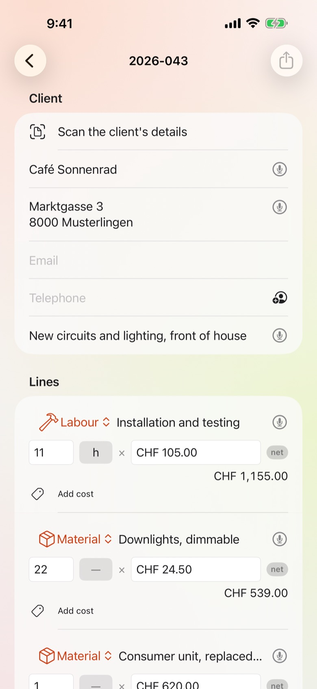
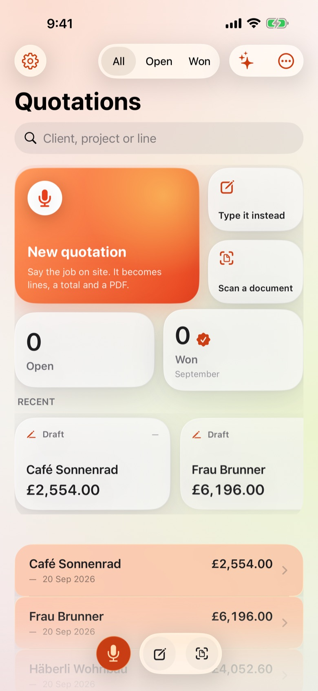
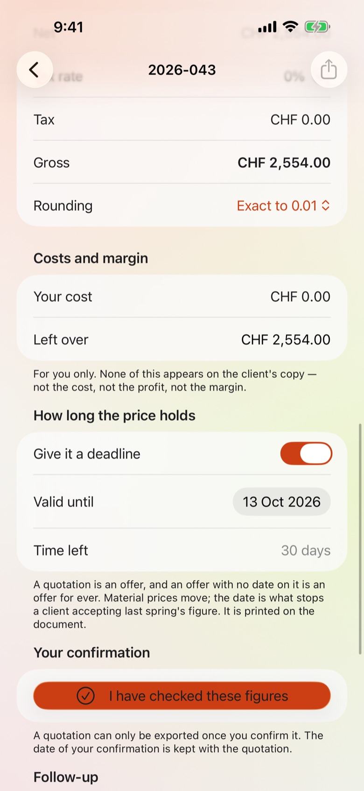
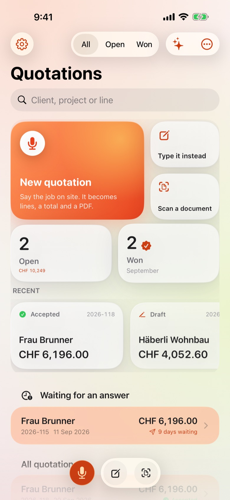
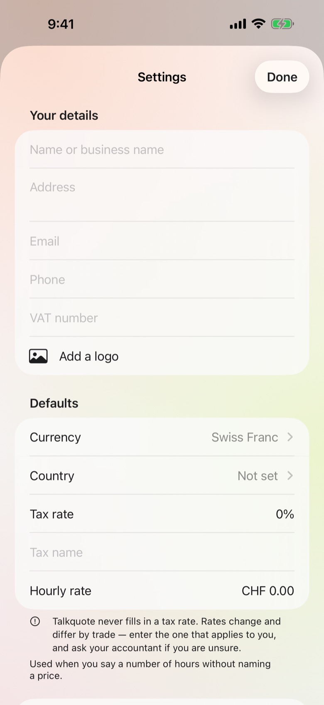

Maler
Zwei Wohnungen, neu gestrichen
Häberli Wohnbau
- Wände und Decken, vier Räume26 h
- Dispersion, weiss matt34 l
- Spachteln und Abdecken8 h
- Abdeckungen und Entsorgung1
Was die Kundschaft siehtCHF 3'749.60
Talkquote
Offerten per Sprache
Für Elektrikerinnen, Sanitärinstallateure, Malerbetriebe, Schreinereien, Plattenleger und Bauunternehmer, die im Lieferwagen offerieren statt am Schreibtisch — und genauso für den Cateringbetrieb, die Autowerkstatt, die Beraterin und den Laden, der in Stück statt in Stunden rechnet. Sprich den Auftrag, bevor du die Baustelle verlässt, und Talkquote macht daraus Positionen mit Preisen, eine Summe und ein PDF, das die Kundschaft lesen kann.

Die Offerte entsteht im Lieferwagen — oder um elf Uhr nachts.
Neunzig Sekunden auf der Baustelle, gesprochen, und die Kundschaft hat das Dokument, bevor du zu Hause bist. Mehr ist es nicht.
Sechs verschiedene Betriebe, sechs gewöhnliche Aufträge, gerechnet wie die App rechnet. Die Kundschaft ist erfunden; jede Zahl unten kommt aus Talkquote.
Maler
Häberli Wohnbau
Was die Kundschaft siehtCHF 3'749.60
Sanitärinstallateur
Frau Brunner
Was die Kundschaft siehtCHF 6'072.00
Elektriker
Café Sonnenrad
Was die Kundschaft siehtCHF 2'494.00
Catering
Hochzeit Vogt
Was die Kundschaft siehtCHF 11'060.00
Autowerkstatt
Frau Item
Was die Kundschaft siehtCHF 1'252.50
Webstudio
Bäckerei Steiner
Was die Kundschaft siehtCHF 10'570.00
Beispielzahlen. Deine Ansätze, deine Währung, dein Steuersatz — die App nimmt deine.
Die Plattformen können Termine, Zahlungen und Personal. Das hier kann die neunzig Sekunden, die du zwanzigmal in der Woche wiederholst.
| Die Frage | Die übliche Antwort | Talkquote |
|---|---|---|
| Ein Angebot vor Ort | Später am Schreibtisch tippen | Vor Ort sprechen und verschickt wegfahren |
| Der Anfang | Ein Konto, ein Platzpreis, ein Test, der abläuft | Öffnen und benutzen; gefragt wird einmal, nach drei Tagen |
| Ein Angebot, auf das niemand geantwortet hat | Du merkst es, wenn der Auftrag weg ist | Es rückt nach oben und zählt die Tage |
| Deine Preise und deine Kunden | Auf irgendeinem Server | Auf deinem Telefon, hinter Face ID |
Diktat
«Drei Stunden Arbeit zu fünfundneunzig, zwölf Quadratmeter Fliesen zu sechzig, zweihundert für Material.» Talkquote teilt das in Zeilen, Einheiten und Preise auf und markiert alles, was es erschließen musste, zum Nachprüfen. Mit «nächste Position» beginnt eine neue Zeile. Talkquote lernt die Namen Ihrer Kunden auf Ihrem iPhone und markiert jede Zahl, bei der es unsicher war.
Das Dokument
Dein Logo, deine Adresse, deine MWST-Nummer, deine Währung und deine eigenen Bedingungen, in der Sprache deiner Kundschaft. Verschick sie als PDF, als Word-Datei zum Bearbeiten, als Excel-Tabelle, als CSV für die Buchhaltung oder als reinen Text für eine Nachricht — fünf Formate aus denselben Zahlen, per E-Mail oder über alles andere auf dem Telefon.

Nachfassen
Per E-Mail verschickt gilt sie als versendet, und die Liste stellt nach oben, was seit einer Woche schweigt. Das Teuerste, was einer Offerte passieren kann, ist dass nichts passiert.

Die ganze App, Bildschirm für Bildschirm, genau so, wie sie in Ihrer Hand aussieht. Nichts gestellt, nichts versprochen, was nicht schon da wäre.





Von der Küche der Kundschaft bis zur Offerte in deren Postfach. Fünf Schritte, keiner davon braucht Empfang.
In den Einstellungen stehen Name, Adresse, Logo, MWST-Nummer, Währung, Standardsteuersatz und deine eigenen Bedingungen. Ab dann steht das auf jedem Dokument. Talkquote liefert keine eigenen Bedingungen: Das ist dein Vertrag mit deiner Kundschaft und geht die App nichts an.
Tippe aufs Mikrofon und sprich normal. Mengen, Einheiten und Preise werden aus den Sätzen gezogen; alles, was der Parser erschließen musste, wird markiert, damit du es ansiehst. Die Erkennung läuft auf dem Gerät — kein Empfang nötig, nichts wird hochgeladen.
Jede Zeile zeigt den Satz, aus dem sie stammt, einen Tipp entfernt. Trag deinen Einstandspreis ein, und Talkquote zeigt Gewinn und Marge — nur innerhalb der App. Deine Kundschaft sieht nie einen Einstandspreis, denn das ist ein Gespräch, das niemand will.
Bevor etwas exportiert werden kann, bestätigst du ausdrücklich, dass du die Summen geprüft hast. Datum, Version und die Summen in diesem Moment bleiben bei der Offerte. Jede spätere Änderung löscht die Freigabe, damit der Eintrag nie Zahlen beschreibt, die es so nicht mehr gibt.
Als PDF oder Word exportieren und entweder überall hin teilen oder direkt aus der App senden: Die Mail öffnet sich bereits an deine Kundschaft adressiert, mit Dokument im Anhang und einem Begleittext in deren Sprache. Wähle mehrere Offerten aus, und sie gehen in einer Nachricht raus. Das Senden markiert sie als versendet, und die Liste beginnt, die Tage zu zählen.
Sprich in der einen, schreib das Dokument in der anderen. Ein polnischer Handwerker in Luzern kann einer deutschen Kundschaft auf Deutsch offerieren.
Setz einen Standardstundensatz, und Talkquote nimmt ihn immer dann, wenn du Stunden ohne Preis nennst.
MWST, TVA, IVA, VAT — Satz und Bezeichnung setzt du selbst, pro Offerte, denn ein Betrieb nahe der Grenze hat nicht immer nur einen.
Eine Anzahlung als Anteil der Summe, Rabatte pro Zeile oder über die ganze Offerte, und Rundung so, wie du tatsächlich Rechnung stellst.
Die meisten Aufträge sind Varianten eines schon offerierten. Kopieren, drei Zeilen ändern, senden — statt vierzehn neu zu tippen.
Face ID oder ein Code auf der App selbst, damit ein Telefon auf der Werkbank keine Kundenpreise zeigt.
Der Kunde unterschreibt mit dem Finger auf Ihrem Bildschirm. Die Unterschrift steht auf der Offerte und geht auf die Rechnung über.
Wählen Sie Ihr Gewerbe, und die Positionen heissen anders: Zutaten beim Catering, Teile in der Werkstatt, Lizenzen in der Agentur. Bereits Geschriebenes bleibt unverändert.
Hochzeit, Lieferung, Betriebsstillstand? Schalten Sie das Termindatum ein — es steht auf dem Dokument und geht auf die Rechnung über.
Eine Offerte nach Kunde oder Nummer finden — über Siri, Spotlight oder einen Kurzbefehl, ohne die App zu öffnen.
Was Sie offeriert haben, was angenommen wurde und was noch offen ist — ohne Tabelle.
Sieben Tage gratis
Kein Konto, keine Anmeldung. Drei Tage lang die ganze App ausprobieren; dann fragt sie einmal, und du entscheidest.
Die Preise stehen im App Store, in deiner eigenen Währung. Sieben Tage gratis, dann monatlich oder jährlich — jederzeit kündbar in den Einstellungen deines iPhone.
Nein. Diktat, Auswertung, PDF- und Word-Erzeugung laufen alle auf dem Gerät. Du kannst eine vollständige Offerte in einem Keller ohne Empfang schreiben.
Der einzige Netzverkehr, den Talkquote verursacht, gehört zum App Store — beim Abonnieren oder Wiederherstellen.
Das ist Sache zwischen dir und deiner Kundschaft und hängt von deinen eigenen Bedingungen ab — die du schreibst und Talkquote druckt. Die App liefert keine eigenen Bedingungen und verspricht nichts in deinem Namen.
Was Talkquote dir gibt, ist ein Nachweis: wann du die Zahlen freigegeben hast, welche Version lief und wie die Summen in diesem Moment aussahen. Wird je eine Zahl bestritten, ist das erheblich mehr wert als jede Formulierung.
Sie kann ein Wort falsch verstehen, wie jede Erkennung. Genau darum zeigt jede Zeile den Satz, aus dem sie stammt, darum wird alles Erschlossene markiert, und darum lässt sich nichts exportieren, bevor du die Summen selbst bestätigt hast. Talkquote entwirft; du entscheidest.
Ja. Wähle in der Liste «Mehrere auswählen», hake die gewünschten an und sende — sie gehen als Anhänge in einer Nachricht raus.
Sind sie alle für dieselbe Kundschaft, ist die Mail bereits adressiert. Sind sie für verschiedene, bleibt das An-Feld absichtlich leer: Zwei Kundschaften in einer Mail würde jeder die Adresse der anderen zeigen.
Jede App lässt sich drei Tage lang vollständig nutzen, bevor sie nach etwas fragt. In Fornela, Fornela Dolce und Talkquote beginnen die Tage von selbst, wenn du die App zum ersten Mal öffnest. In den Apps, die man einmal kauft, beginnen sie mit einem Tippen auf einen kostenlosen Drei-Tage-Test im App Store: Es wird nichts berechnet und nichts verlängert sich. So oder so fragt die App nach den drei Tagen einmal, und du entscheidest.
Fornela, Fornela Dolce und Talkquote sind ein Abo — monatlich oder, günstiger, jährlich. Melopocket, die drei Sharpfield-Instrumente und die drei Stopwise-Apps kauft man einmal, und nichts verlängert sich. So oder so bekommst du die ganze App. Keine Stufen, keine Zusatzpakete, nichts zurückgehalten — und Apple nimmt die Zahlung entgegen, der Entwickler sieht also nie eine Karte oder einen Namen.
Ja. Jederzeit im App Store kündigen: oben rechts auf dein Bild tippen, dann Abonnements. Nur dort lässt sich ein Abo stoppen — die App kann es nicht für dich tun, weil Apple das Geld einzieht. Bis zum Ende der bezahlten Periode bleibt alles nutzbar.
Rückerstattungen macht Apple, nicht wir — wir sehen deine Zahlungsdaten nie und können nichts zurückzahlen. Geh auf reportaproblem.apple.com, melde dich an und wähle den Kauf.
Was du gekauft hast, gehört zu deinem Apple-Account. Melde dich auf einem iPad oder einem neuen iPhone mit demselben Apple-Account an, öffne die App und wähle im Kaufbildschirm «Wiederherstellen». Es wird nichts erneut belastet.
Ein Kauf gilt für einen Apple-Account. Er wird nicht mit der Familie geteilt und lässt sich im Betrieb nicht weiterreichen — eine zweite Person braucht einen eigenen.
Nein. Es gibt kein Konto, keine Anmeldung und keinen Server. Alles, was die App hält, liegt auf deinem eigenen Gerät und verschwindet, wenn du die App löschst.
Der einzige Netzverkehr, den die App verursacht, gehört zum App Store — beim Kaufen, Abonnieren oder Wiederherstellen.
Die deines Geräts, sofern die App in diese Sprache übersetzt ist; sonst Englisch. Es gibt keine Spracheinstellung, die man falsch setzen könnte — änderst du die Sprache deines iPhones, ändert sich die App mit.
| Plattform | iPhone und iPad, iOS 17 und neuer |
| Sprachen | Englisch, Deutsch, Französisch, Italienisch, Polnisch, Spanisch, Niederländisch, Portugiesisch, Schwedisch, Tschechisch, Dänisch, Norwegisch, Finnisch, Türkisch, Ukrainisch, Japanisch, Chinesisch, Arabisch, Koreanisch, Russisch, Griechisch, Hindi |
| Export | PDF und Word (.docx) |
| Erhobene Daten | Keine |
| Konto nötig | Keines |
| Ein Apple-Account | Ein Kauf, ein Apple-Account. Nicht für die Familie freigegeben und nicht im Betrieb weitergereicht. |
Zahlungen, Rückerstattungen und Kündigungen
Jede Zahlung für diese App nimmt Apple entgegen. Das heisst: nur Apple kann eine Belastung nachschlagen, ein Abo stoppen oder Geld zurückgeben. Der Entwickler sieht nie eine Karte, einen Namen oder eine Zahlung und kann daran nichts ändern.
Gekündigt wird im App Store, und sonst nirgends. App Store öffnen, oben rechts auf dein Bild tippen, dann Abonnements. Die Kündigung stoppt die nächste Zahlung; die bereits bezahlte Periode läuft zu Ende. Mach es mindestens 24 Stunden vor Periodenende, sonst geht die Verlängerung trotzdem durch.
Was Talkquote nicht tut
Talkquote entwirft aus dem, was du gesagt hast, eine Offerte und druckt sie unter deinem Namen. Es prüft deine Preise nicht, kennt deine örtlichen Vorschriften nicht und übernimmt keine Verantwortung für die Zahlen. Du gibst jede Offerte frei, bevor sie die App verlassen kann, und genau das ist der Punkt: Die Zahlen sind deine.
Jede Zeile behält den Satz, aus dem sie stammt — tippe die Zeile an, um ihn zu sehen. Korrigiere die Zahl direkt; die Freigabe der Offerte löscht sich selbst, sodass du gebeten wirst, die neue Summe zu prüfen, bevor sie verschickt werden kann.
Zwei Dinge deaktivieren sie: eine Offerte ohne Zeilen und eine Offerte, deren Zahlen du seit der letzten Änderung nicht freigegeben hast. Öffne den Freigabebereich und bestätige die Summen.
Dafür braucht es ein auf dem Gerät eingerichtetes Mail-Konto. Richte eines in den Einstellungen ein oder nutze stattdessen «Teilen» — darüber erreichst du Gmail, Outlook, WhatsApp und alles andere, was installiert ist.
Ein Kauf gehört zu deinem Apple-Account, nicht zu einem Gerät. Öffne auf einem neuen Telefon oder nach einer Neuinstallation die App und wähle auf dem Kaufbildschirm Wiederherstellen. Es wird nichts erneut verrechnet.
App Store öffnen, oben rechts auf dein Bild tippen, dann Abonnements. Nur dort lässt sich ein Abo stoppen — diese App kann es nicht für dich tun, weil Apple das Geld einzieht. Die Kündigung stoppt die nächste Zahlung, die bereits bezahlte Periode läuft zu Ende. Ein Einmalkauf verlängert sich nie und hat nichts zu kündigen.
Immer noch nicht gelöst? Schreib an alpenlume@gmail.com — nenne die App, dein iPhone oder iPad und was du erwartet hast.
Zuletzt aktualisiert 10. September 2026.
Die kurze Fassung
Talkquote erhebt nichts, sendet nichts und hat kein Konto. Deine Offerten und die Angaben deiner Kundschaft bleiben auf deinem Gerät.
Nichts. Diese App hat kein Konto, keine Anmeldung, keine Analyse, keine Werbe-ID, keinen Absturzberichtsdienst und kein Tracking irgendeiner Art. Es wird kein Profil gebildet und nichts an irgendwen weitergegeben.
Diese App hat keinen eigenen Server: nichts zum Anmelden, und niemals etwas, das zum Entwickler hochgeladen wird. Was sie mit dem Internet tut — bei den meisten dieser Apps nämlich nichts — steht oben unter „Auf deinem Gerät“.
Zwei Dinge nutzen das Internet, und beide gehören jemand anderem. Der App Store, wenn du kaufst, abonnierst oder wiederherstellst. Und wenn du etwas teilst — ein Gericht, ein Rezept, ein Dokument — übergibt iOS es der App, die du gewählt hast, ob Nachrichten, Mail oder WhatsApp, und diese App sendet es über ihre eigene Verbindung nach ihrer eigenen Datenschutzerklärung. Nichts wird gesendet, bevor du auf Senden drückst, und diese App erfährt nie, wohin es ging.
Das Bezahlen wickelt Apple vollständig ab. Die App sieht nie eine Kartennummer, einen Namen oder eine Adresse; sie stellt dem App Store eine einzige Frage — ob dieser Apple-Account die App besitzt — und erhält ja oder nein. Für die Transaktion gilt Apples eigene Datenschutzerklärung.
Diese App richtet sich nicht an Kinder und erhebt von niemandem etwas. Es gibt also nichts über ein Kind, das offengelegt, korrigiert oder gelöscht werden könnte.
Das Datenschutzrecht gibt dir das Recht, personenbezogene Daten über dich einzusehen, zu berichtigen, zu exportieren und löschen zu lassen. Da keine gespeichert werden, gibt es auf Anfrage nichts herauszugeben oder zu löschen. Alles, was die App hat, liegt auf deinem eigenen Gerät: Löschst du die App, ist es weg — und woanders war es nie.
Sollte sich diese Erklärung je ändern, wird sie oben datiert. Sie wird nicht rückwirkend geändert, denn es gibt keine erhobenen Daten, die eine Änderung neu erlauben könnte.